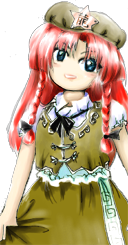
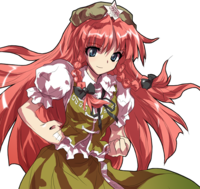

- Welcome to Touhou Wiki!
- Please register to edit. For assistance, check in with our Discord server or IRC channel.
Hong Meiling
Hong Meiling xʊ̜ŋ˧˥ meɪ̯˨˩˨liŋ˧˥ (♫) Hong Meirin, Hoan Meirin | |
|---|---|
|
Hong Meiling in Touhou Hisoutensoku Chinese GirlMore Character Titles | |
| Species | |
| Abilities |
Usage of Qi |
| Occupation |
Gatekeeper and Gardener of the Scarlet Devil Mansion |
| Location | |
Music Themes | |
| |
Appearances | |
| Official Games | |
| |
| Print Works | |
| |
Hong Meiling (紅 美鈴 Hon Meirin) is a youkai, though it isn't currently known which specific category she actually belongs to. She's the gatekeeper of the Scarlet Devil Mansion. She is known for her mastery of the martial arts, part of which can be seen from her movement which is performed with Shin-Kyaku (a move in Chinese martial arts).
General Information[edit]
Meiling first appeared as the Stage 3 boss and midboss of Embodiment of Scarlet Devil. Later she became a playable character in Immaterial and Missing Power, one of Stage 5's targets in Shoot the Bullet, and one of the three protagonists of Touhou Hisoutensoku.
Meiling is a proud Chinese-style martial arts master and a youkai.
Personality[edit]
Meiling is very laid-back, which sometimes gets her into trouble, and is known to take siestas while on the job. She regularly receives challengers and is a worthy opponent of the strong. She isn't outwardly aggressive towards humans unless they are trying to trespass on Scarlet Devil Mansion property, though it seems the only humans who trespass are powerful enough to defeat her in the first place. She'll also sometimes have conversations with bypassers.
Many of her lines in Touhou Hisoutensoku indicate that Meiling has boastful pride in China (though she does also says she loves Gensokyo with all her heart): "You're all not there yet! You're all children compared to 4000 years of history!" comparing Yuyuko Saigyouji to a Jiang Shi, and noting that Tenshi Hinanawi and the Celestials read Chinese works. (Many of Tenshi's win quotes in Scarlet Weather Rhapsody come from Chinese classics.) This is how Chinese characters in Japanese media are commonly depicted; stereotypically prideful. The script also reveals that she seems to spend a lot of time reading manga written by the tengu.
Ability[edit]
Meiling's mastery of Tai Chi Chuan is her main ability in combat, but other than that, she has no youkai-like ability. While not particularly strong as a youkai, she is described as being well-rounded, with no particular weak point when fighting humans; this is likely why she was hired to watch the gate of the Scarlet Devil Mansion.
- Usage of Qi
This Qi (気) is not an ability to skillfully be kind and considerate of others – this Qi is not the same as how it is used in the word "kikubari" (気配り) meaning "attentiveness or consideration for others". Rather, it is the kind of Qi that pertains to auras, the Qi of martial arts. It's an ability to see and discern the shapes of energies and auras within the body. It is the exact same Qi that is used frequently in other works outside Touhou Project, but this could be a coincidence. Her danmaku as well as her flight is probably due to this ability.
Occupation[edit]
Meiling works as the gatekeeper and gardener of the Scarlet Devil Mansion. She also acts as the doorkeeper when there's a party at the mansion. She performs Tai Chi Chuan daily, and has a nap at noon.
Background Information[edit]
Name[edit]
Her full name is Hong Meiling (紅 美鈴 Hon Meirin). The character for Hong (紅) literally means "Scarlet/Crimson" in Japanese and "Red" in Chinese. Meiling (美鈴) means "Beauty Bell/Chime". The latter part of her name, Meiling, is at least a common Chinese name. Her full name is a referrence to Hong Mei, a tai chi grandmaster. These characters can be read in Japanese as "Kurenai Misuzu", and you'll sometimes see her name mispronounced or miswritten that way. Using English name order, her name would actually be "Meiling Hong", which is used normally by Chinese diaspora or immigrants into Western countries. Some sources and media may often read Chinese names in Japanese on'yomi, rendering her name as "Kou Birei/Kou Mirin". Meiling's name is often rendered in pinyin/Mandarin instead.
Hong (紅) is "kou" in the on reading, "Hóng" in standard Chinese and "Hhong" in Shanghainese. It could possibly refer to the Red Guards (紅衛兵, Pinyin: Hóng Wèibīng), a youth movement of the cultural revolution of China. This is reinforced by her clothing. The word "guard" also has the meaning of "gatekeeper" as well. Thus, it could indicate a pun, where "guard of the family name Hong = Red Guard." "Hong" also appears in the title of Embodiment of Scarlet Devil (東方紅魔郷). However, the name of the game in its developmental stages was 東方紅茶館, thus indicating that it has a strong relation to the 紅 of black tea (紅茶).
Additionally, her first name could also stand for 虹, which means rainbow, since it has the same on reading as 紅 as well as the same pronunciation in standard Chinese and Shanghaiese. However, it also is synonymous with a two-headed dragon-like creature in a Chinese-context, thus the hóng dragon's rainbow associations may be reflected in Meiling's title of "Colorful Rainbow Gatekeeper", the naming theme of some of her spell cards, and her bullet patterns and attacks being usually rainbow-colored.
Her name was spelled by ZUN as in Immaterial and Missing Power and the corrected version of Sangetsusei as Hong Meirin. Her name became Hoan Meirin in Perfect Memento in Strict Sense. Though in pinyin, it would be "Meiling"; there is not a single source within the Touhou Project itself that states that it is spelled in this manner. Additionally, Meiling says "Geez, please remember my name~" in a win quote in Immaterial and Missing Power while ZUN didn't know how to answer the question "Is Chuugoku's name forgotten?"[1]
Design[edit]
Meiling has aqua-blue eyes and long, scarlet hair that symbolizes both her name and the place that she's guarding. Her green beret and dress resemble traditional Chinese clothing mixed with the red guard uniform. Her beret has a gold star on the front with the Traditional Chinese character "龍" that is read and pronounced as "lóng" in standard Chinese and means dragon. She wears white pants in her fighting game sprites.
Meiling's Appearances[edit]
Games[edit]
- Embodiment of Scarlet Devil
During the events of Embodiment of Scarlet Devil, she bravely fought against the intruding heroines, but ultimately failed. She ends up being followed by the player character to the mansion against her will, initiating another fight.
Spin-offs[edit]
- Immaterial and Missing Power
- Main article: Immaterial and Missing Power Meiling's Script
Meiling was made playable in Immaterial and Missing Power through a downloadable patch, but she was the only one to not be given a scenario. She is almost universally considered a bottom tier character in the game as well, despite the fact that she has some of the most impressive combos in the game, as shown here.
- Shoot the Bullet
In Shoot the Bullet, Aya Shameimaru encountered Meiling on stage 5 and took photos of her danmaku.
- Touhou Hisoutensoku
- Main article: Touhou Hisoutensoku Meiling's Scenario
In Touhou Hisoutensoku, she saw a roaming giant that she was certain was an incarnation of a God of Calamity, "Taisui Xingjun". However, those she warned didn't realize the seriousness of the situation they were facing. Thus it was up to Meiling alone to defend the Scarlet Devil Mansion and all of Gensokyo from this destructive deity. After defeating some pseudo-characters sent as assassins, she defeats a Giant Catfish and faces Taisui himself, then realizing it was all a dream. It may be worth noting that despite her comically strange scenario, she is considered by Soku communities to generally be a high tier character in this game unlike in Immaterial and Missing Power.
Literature[edit]
- Bohemian Archive in Japanese Red
One day, a mysterious crop circle appears in the gardens of the Scarlet Devil Mansion, causing widespread speculation, rumors and gossip around the Mansion.
Meiling, who is responsible for taking care of the garden, claims not to be the culprit, but admits that she's been tasked by Remilia to restore the garden to its original state now that her mistress has become bored with the crop circle pattern. During her interview with Aya Shameimaru, she notes she is quite worried, as she has no idea how to change the flowers back. Questioned about the crop circle's origins, Meiling vehemently denies falling asleep, so Aya goes on to talk about aliens...
The culprit revealed at the end is Patchouli Knowledge.
- Touhou Bougetsushou
During the party to celebrate the completion of Remilia's Moon rocket in Silent Sinner in Blue, Meiling was briefly shown guarding the gates of the Scarlet Devil Mansion as invitees walked by. Expanded on in Inaba of the Moon and Inaba of the Earth, Meiling was in charge of vetting invitations. She gave a speech about how she would not let anyone through without the proper invites, but the residents of Eientei simply walked past her while she was giving it. Meiling managed to get them to show her their invites, but got bombarded by so many invites from so many rabbits that a whole slew of people (the Eientei group included) got by. Inside the mansion, the group ran into Sakuya Izayoi, causing Reisen Udongein Inaba to remember how powerful Sakuya was and think about how her job of managing the entire Scarlet Devil Mansion put her on a whole new level compared to that gate guard.
About two months later, in an unrelated incident, Eirin Yagokoro infiltrated the Scarlet Devil Mansion and met Patchouli Knowledge in the library. Patchouli wondered what happened to the gate guard, to which Eirin commented that she played tough, but all she needed to get past her was a "light greeting".
- Wild and Horned Hermit
In Chapter 16 of Wild and Horned Hermit, it appears that because Remilia Scarlet and Sakuya Izayoi were both drinking from the Ibaraki Box of a Hundred Medicines at a flowering viewing, they started to violently tease Meiling.
Relationships[edit]
Meiling has at least communicated to the entire cast of Touhou Hisoutensoku and may be on friendly terms with anyone who walks nearby the gates of the Scarlet Devil Mansion.
Residents of the Scarlet Devil Mansion[edit]
Remilia is Meiling's mistress. Being the type of person Remilia is, she tends to tease all her subordinates, and Meiling is no exception. She does get mad at her sometimes if things don't go her way, but the two are generally on friendly terms, and in Touhou Hisoutensoku it's suggested that Remilia reads some of the same manga Meiling does.
Sakuya is a fellow employee of Meiling. Meiling's win quote against Sakuya Izayoi in Touhou Hisoutensoku implies a friendly, if somewhat formal, relationship between the two of them (rather than the comically abusive relationship often depicted in fan works). In those quotes, Meiling also tells Sakuya that she always goes easy on her, so it seems they do spar often. She also claims that she wouldn't go easy on the maid if it were a formal match, but it's unknown how much effort there is on Sakuya's part, or if Meiling's claims about her strength are true at all. Sakuya is also shown to care for Meiling, though is strict about her not slacking off.
Patchouli is the friend of her mistress, and sometimes berates her for not thinking enough and spending too much time reading senseless comics.
- Fairy maids and other staff
The fairy maids assist Meiling in Embodiment of Scarlet Devil, but it's unknown what sort of authority she has over the fairy maids in the mansion. Perfect Memento in Strict Sense imples that youkai also join in Meiling's battles on a whim, but instead usually only point and laugh.
Flandre is Remilia's younger sister. It's unknown what kind of relationship Meiling and Flandre have, however.
Minor Relationships[edit]
- Taisui Xingjun and the giant catfish
Taisui Xingjun is Meiling's sworn enemy and the Giant Catfish is the avatar of Taisui Xingjun. They both only appeared in her dream while she was reading a manga, so any realistic communications with them is so far not shown.
Gallery[edit]
Meiling artwork from Embodiment of Scarlet Devil
Meiling artwork from Immaterial and Missing Power
Meiling greeting Sakuya at the gate in Strange and Bright Nature Deity
Meiling's sigil in Grimoire of Marisa
Another image of Meiling in Inaba of the Moon and Inaba of the Earth
Meiling's colors from Touhou Hisoutensoku. Middle top refers to her 2P palette from IaMP.
Meiling's sigil from Touhou Hisoutensoku
Meiling cameo in Oriental Sacred Place
Skills[edit]
| Name | Translated | Comments | Games | Usage | ||
|---|---|---|---|---|---|---|
| Total: 13 | ||||||
| 連環撃 | Multistrike | IaMP | AA or AAB or AAAB or AAA2B or AAAA | |||
| 螺光歩 | Spiral-Light Steps | IaMP Soku |
236A/B Default 214B/C | |||
| 紅砲 | Crimson Cannon | IaMP Soku |
623A/B Default 623B/C | |||
| 黄震脚 | Yellow Quake Kick | IaMP Soku |
214A/B Default 22B/C | |||
| 降華蹴 | Kick of Showering Brilliance | IaMP Soku |
421A/B Alternate 214B/C | |||
| 芳波 | Fragrant Wave | Soku | Default 236B/C | |||
| 水形太極拳 | Water Taichi Fist | Soku | Alternate 236B/C | |||
| 彩雨 | Colorful Rain | Related: Meiling's Colorful Sign "Colorful Rain" (EoSD) | Soku | Alternate 236B/C | ||
| 紅寸剄 | Crimson Energy Release | Soku | Alternate 623B/C | |||
| 虎剄 | Tiger Chi Release | Related: Meiling's Chi Sign "Fierce Tiger Energy Release" (Soku) | Soku | Alternate 623B/C | ||
| 烈虹拳 | Intense Rainbow Fist | Soku | Alternate 214B/C | |||
| 地龍波 | Earth Dragon Wave | Soku | Alternate 22B/C | |||
| 天龍脚 | Sky Dragon Kick | Related: Meiling's Chi Sign "Earth Dragon Sky Dragon Kick" (Soku) | Soku | Alternate 22B/C | ||
Spell Cards[edit]
| Name | Translated | Comments | Games | Stage | ||
|---|---|---|---|---|---|---|
| Total: 24 | ||||||
| 華符「芳華絢爛」 | Flower Sign "Gorgeous Sweet Flower" | Related: Flower Sign "Selaginella 9" | EoSD GoM |
St. 3: E/N — | ||
| 華符「セラギネラ９」 | Flower Sign "Selaginella 9" | EoSD | St. 3: H/L | |||
| 虹符「彩虹の風鈴」 | Rainbow Sign "Colorful Rainbow Wind Chime" | Related: Colorful Sign "Colorful Light Wind Chime" | EoSD | St. 3: E/N/H/L | ||
| 幻符「華想夢葛」 | Illusion Sign "Imaginary Flower Yumekazura" | EoSD | St. 3: H/L | |||
| 彩符「彩雨」 | Colorful Sign "Colorful Rain" | Related: Colorful Sign "Vivid Chaotic Dance" | EoSD | St. 3: E/N | ||
| 彩符「彩光乱舞」 | Colorful Sign "Vivid Chaotic Dance" | Related: Extreme Color "Vivid Chaotic Dance" | EoSD | St. 3: H/L | ||
| 彩符「極彩颱風」 | Colorful Sign "Dazzling Color Typhoon" | EoSD GoM |
St. 3: N/H/L — | |||
| 彩符「彩光風鈴」 | Colorful Sign "Colorful Light Wind Chime" | IaMP Soku |
Use Use | |||
| 極彩「彩光乱舞」 | Extreme Color "Vivid Chaotic Dance" | IaMP Soku |
Use Use | |||
| 光符「華光玉」 | Light Sign "Blossoming Light Orb" | IaMP | Use | |||
| 極光「華厳明星」 | Polar Light "Flower-Adorned Morning Star" | IaMP | Use | |||
| 華符「破山砲」 | Flower Sign "Mountain-Breaking Cannon" | IaMP | Use | |||
| 三華「崩山彩極砲」 | Three Blossoms "Colorful Ultimate Mountain-Breaking Cannon" | (三華(sange) maybe has a double meaning, three flowery and powerful attacks and dying gracefully (散華 sange)) | IaMP | Use | ||
| 華符「彩光蓮華掌」 | Flower Sign "Colorful Light Lotus Flower Palm" | StB Soku GoM |
St. 5 Use — | |||
| 彩翔「飛花落葉」 | Colorful Flip "Fluttering Petals and Falling Leaves" | StB Soku |
St. 5 Story | |||
| 彩華「虹色太極拳」 | Colorful Chinese Flower "Rainbow Taijiquan" | Taijiquan: a kind of traditional Chinese shadow boxing. | StB Soku |
St. 5 Use | ||
| 虹符「烈虹真拳」 | Rainbow Sign "Intense Rainbow Fist" | Soku | Use | |||
| 気符「星脈弾」 | Chi Sign "Star-Pulse Shot" | Soku | Use | |||
| 撃符「大鵬拳」 | Strike Sign "Dapeng Fist" | Soku | Use | |||
| 気符「地龍天龍脚」 | Chi Sign "Earth Dragon Sky Dragon Kick" | Soku | Use | |||
| 気符「猛虎内剄」 | Chi Sign "Fierce Tiger Energy Release" | Soku | Use | |||
| 星気「星脈地転弾」 | Star Chi "Earth-Moving Star Pulse Shot" | Soku | Use | |||
| 熾撃「大鵬墜撃拳」 | Blazing Strike "Dapeng-Felling Fist" | Soku | Use | |||
| 彩符「極彩沛雨」 | Colorful Sign "Vivid Color Downpour" | Soku | Story | |||
Additional Information[edit]
- Meiling became a playable character in Immaterial and Missing Power through a downloadable patch, although she wasn't given a a scenario.
- If Meiling loses to Youmu in Touhou Hisoutensoku, Youmu will ask if Meiling shouldn't just use a weapon, namely a green dragon blade. This can be a source of confusion, since many would imagine the legendary Green Dragon Crescent Blade wielded by the famous Chinese general Guan Yu, but women seldom use pole arms in Chinese martial arts. In Japan, the term has become a common misnomer for the liuyedao and other Chinese sabers. As Youmu admits she has only heard about them in stories, the use of her local, incorrect term is likely intentional.
- One of her normal bullet attacks (along with a few of her skill cards) in Touhou Hisoutensoku resembles Krizalid's Typhoon/Tuhon Rage from The King of Fighters '99, 2000, and 2002: Unlimited Match.
- Meiling looks very similar to Orange.
- Meiling is one of the few characters to not make a cameo appearance in Hopeless Masquerade. The reason is currently unknown.
- Meiling is loosely based on Hong Mei (red eyebrows), a Tai Chi grandmaster and leader of the buddhist shaolin temple where the five elders of Kung fu are from.
Fandom[edit]
Meiling is amongst one of the popular characters in the Touhou Project. She's shown typically as a Chinese character that has a tendency to be portrayed as a joke character that chronically naps, often earning herself as knife in the head from Sakuya (if not out of breast envy) as well as additional poor treatment from the rest of the Scarlet Devil Mansion.
Official Profiles[edit]
|  | ○華人小娘
紅 美鈴（ホン・メイリン） 能力：気を使う程度の能力
カラフルで民族っぽい衣装です。彼女は紅魔館の門番で、 カードアタック 全7種 |
Chinese Girl Hong Meiling Ability: Usage of Qi
Her clothing is colorful and somewhat traditional. She is the gatekeeper of the Scarlet Devil Mansion, and prevents intruders from beyond the lake from reaching the mansion. She is by no means a special character, but she is the first character that has something to do with the main story. Even if that something happens to be merely mentioning the Mistress. Total of seven card attacks. |
|  | ○ 華人小娘
紅 美鈴 いつも騒がしい紅魔館。その日も例外なく騒がしかった。 彼女は漠然とした不安を感じていた。 アレは一体何だったのか。 アレは凶事の顕形「太歳星君（たいさいせいくん）」の影である。
勿論それは聞き入れられなかった。 彼女は思っていた。 |
Chinese Girl Hong Meiling The always noisy Scarlet Devil Mansion. That day, it was as noisy as ever. Its gate guard had reported something to the mansion's master, Remilia Scarlet, but the master had loftily ignored her. The girl felt a vague sense of uneasiness. That morning, she had seen a giant figure. Then, it dissolved into a lukewarm mist and disappeared. Just what was that? A big shadow like a roc, and a sinister mist being produced. She was certain. It was the shadow of the Buddha of Misfortune, "Taisui Xingjun".
Naturally, nobody listened to her. The girl thought. In order to break up the everyday boredom with a little fun, she had intentionally exaggerated a bit. |
Official Sources[edit]
- 2002/08/11 Embodiment of Scarlet Devil - Stage 3 dialogue; おまけ.txt
- 2004/12/30 Immaterial and Missing Power (v.1.11 patch)
- 2005/08/11 Bohemian Archive in Japanese Red - Article and Interview: Meiling
- 2005/12/30 Shoot the Bullet - Stage 5 Spell Card comments
- 2006/12/27 Perfect Memento in Strict Sense - Chinese Girl: Hong Meiling
- 2007/03/25 ~ 2007/04/26 Strange and Bright Nature Deity - Chapters 7-8
- 2008/02/09 Silent Sinner in Blue - Chapter 9
- 2008/02/22 Inaba of the Moon and Inaba of the Earth - Chapter 9
- 2009/07/28 The Grimoire of Marisa - Hong Meiling's Spell Cards
- 2009/08/15 Touhou Hisoutensoku - Meiling's Scenario; 登場人物 [2] (Official profile)
- 2011/08/26 Oriental Sacred Place - Chapter 15
References[edit]
- ↑ Meiji University talkshow "Dawn of Touhou"
- ↑ 2.0 2.1 "登場人物" (in 日本語). Tasogare Frontier. Retrieved August 31, 2011. Unknown parameter
|trans_title=ignored (help)
| This page is part of Project Characters, a Touhou Wiki project that aims to write proper descriptions for all official characters of Touhou Project. Please keep the character page guidelines in mind when contributing. |